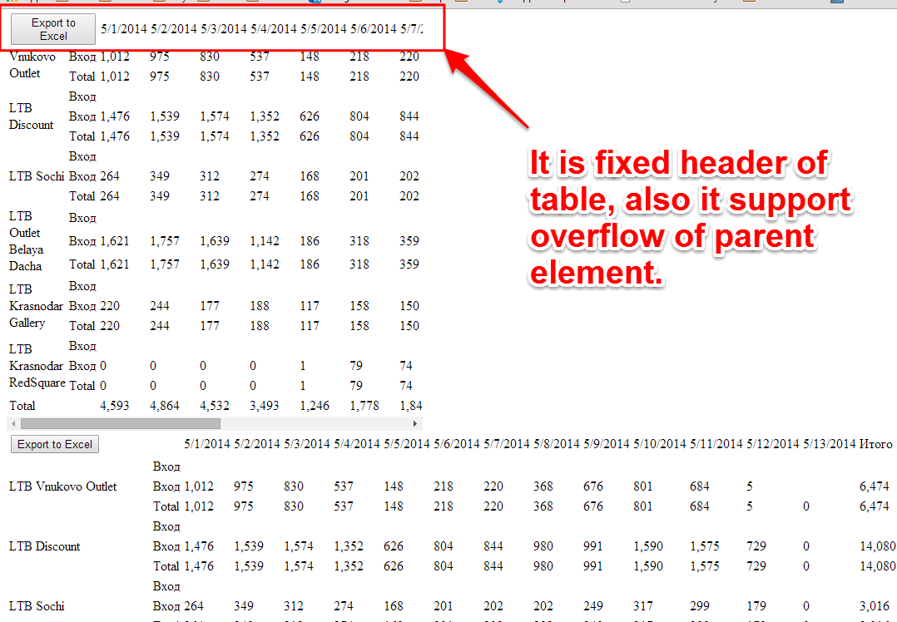
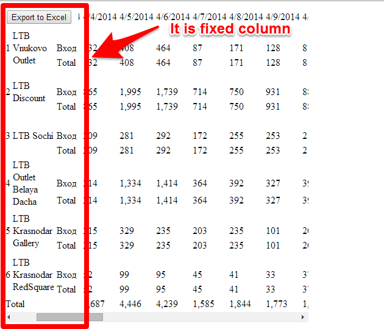

Fixed header or column for HTML table using JQuery - 07 July, 2014
I have created one more plugin for HTML table. It fixes the head of a table on the page. Please see it. The main feature is supporting of overflow parent element.
Some images of plugin:

And another plugin https://bitbucket.org/upyl/fixedcolumn to fix column of table.
